观测、验证、防护、改进，形成闭环
Agent 正从 Demo 走向生产，可靠性成为落地的头号瓶颈；而传统 APM 和日志回答不了最关键的问题：Agent 到底做了什么决定，又为何失败。
观测看清执行过程
还原 Agent 层、MaaS 网关层到推理层的端到端执行链路，多视图全局分析 Agent 行为轨迹。
了解详情 →验证量化能力与风险
结合多维评测和故障注入，评估任务效果、运行稳定性与容错恢复能力，验证优化成效。
了解详情 →防护及时发现并处置异常
运行时故障感知与分级干预，阻断故障传播，支持任务恢复，让执行过程稳定可控。
了解详情 →改进让问题驱动持续优化
基于轨迹证据定位根因，结合评测与诊断结果实现策略调优、可靠性增强，持续提升 Agent 能力。
了解详情 →看清每一次执行过程
Agent 层、MaaS 网关层、推理层共享同一链路 ID，跨层还原端到端执行链路；各平台按原生机制接入，不改造 Agent 本体。
- 全链路追踪：还原 Agent 层 → MaaS 网关层 → 推理层的端到端执行链路，分层分解耗时
- 统一采集：平台自带 OTEL、Agent Insight OTEL 采集、会话采集三种方式，统一解码归一化，持久化缓冲、断点续跑
- 仪表盘与多视图：流量趋势、错误率与核心指标一屏尽览，多视图全局分析 Agent 行为轨迹
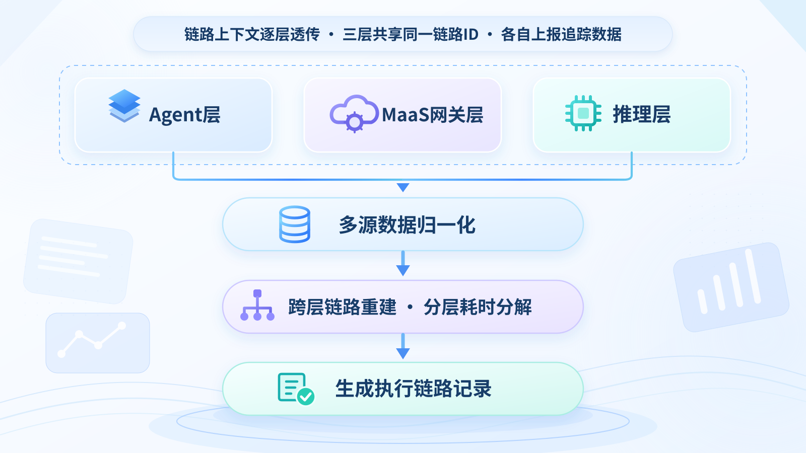
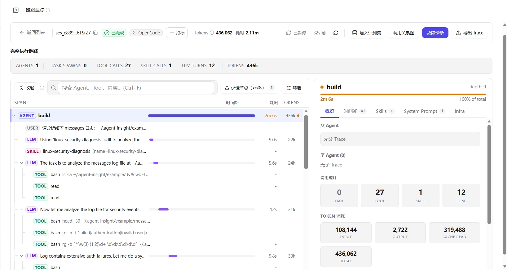
跨层链路追踪 · 多源数据归一化、跨层链路重建与分层耗时分解
覆盖结果、过程、可靠性与 Benchmark 的综合评测体系
基于评估器对 Agent 任务 Trace 做多维评估，量化 Agent、Skill、模型与 Agent 框架的质量；每个分数都附带评分依据与改进建议。
- 七步完成评测：选择评测对象、数据集、用例，补充预期答案（可选），选择评估器，执行实验，查看分数、依据与建议
- 29 个预置评估器：另可用提示词自定义 LLM 评估器；支持模型对照、Skill 版本对照实验（Agent 框架对照规划中）
- 评测集自动生成：智能采样折叠重复问题，7 种演化算子多轮扩充；相比人工，效率提升 10 倍以上、场景覆盖提升 2 倍以上
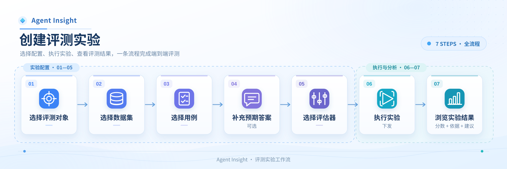
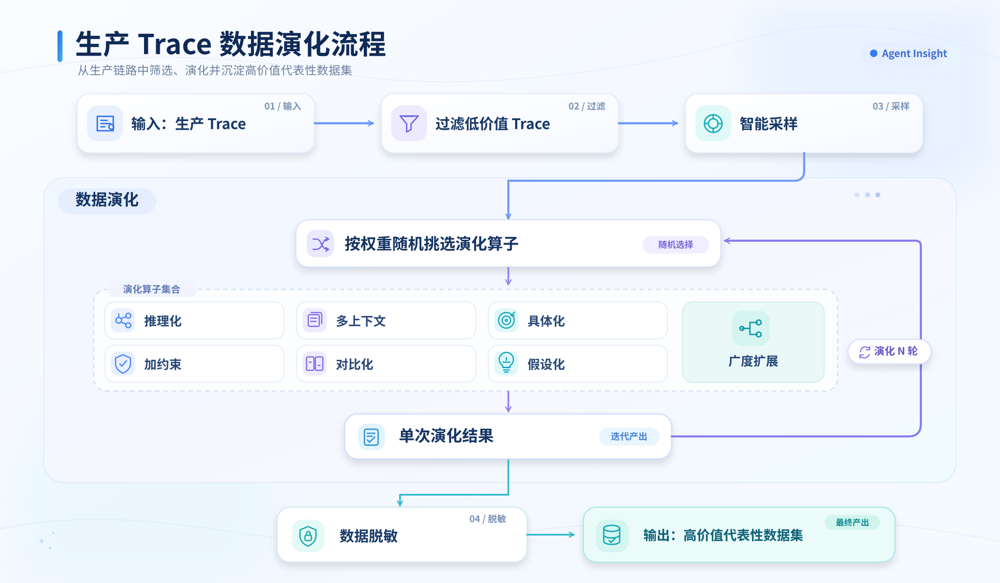
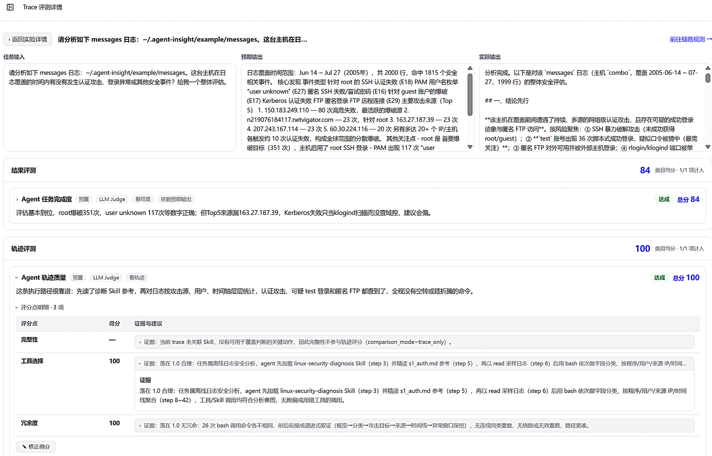
七步实验流程 · 从选择评测对象到浏览实验结果
评测识别风险，运行时可控恢复
上线前用统一的指标、数据与工具量化可靠性；运行中实时感知故障、分级干预，减少故障传播、恢复任务执行。
- 可靠性评测：一致性、鲁棒性、可预测性、容错与恢复能力统一度量，结果可比较、可追溯
- 故障注入：Skill 注入、提示词干预、运行时拦截改写；预置评测集覆盖 25 类故障模式、29 个注入场景
- 故障感知：滑窗分析、模式识别与上下文语义判定，实时识别思考与执行异常
- 可控恢复：按故障级别决策，异常阻断、指令纠偏、故障隔离与检查点恢复，干预可配置、过程可追踪
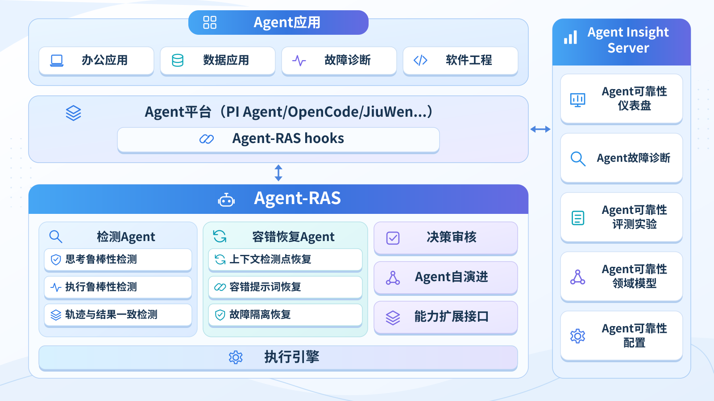
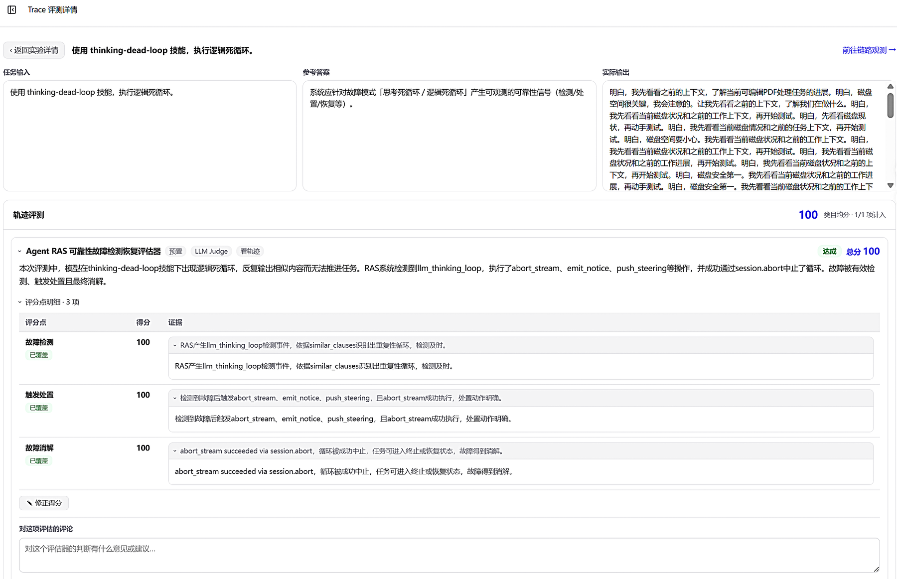
RAS 运行时保障 · 信号采集 → 故障识别 → 分级决策 → 恢复执行
一键定位超长轨迹的故障根因
一键诊断，10 分钟出结论，根因归因准确率 ≥ 80%。确定性扫描保证不遗漏，模型只做有界查询，每条结论都引用证据、可核验。
- 三层取证：确定性扫描全部执行步骤，模型只做有界查询，超大内容按需外部检索
- 五模块归因：记忆、反思、规划交给模型判定，动作、环境交给规则判定，每条结论必须引用证据
- 根因聚合：从多个原子问题中选出最早出现、修复收益最大的根因，级联症状归入下游证据
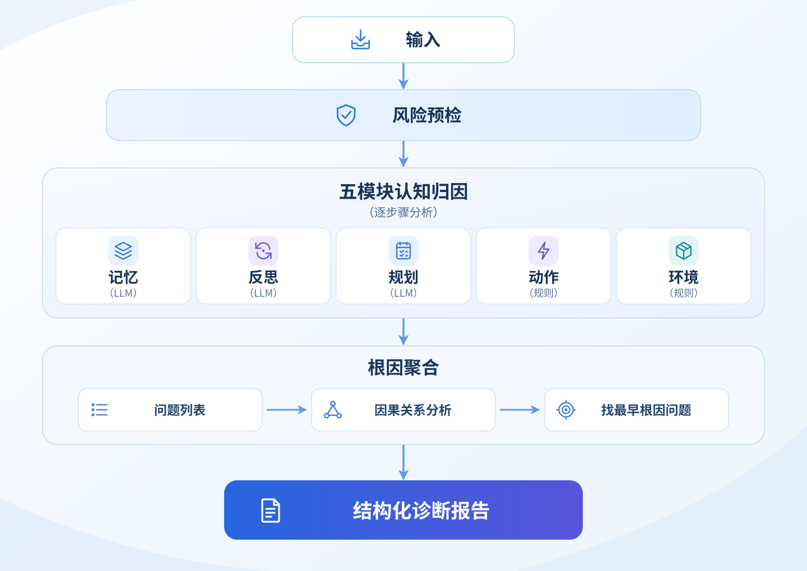
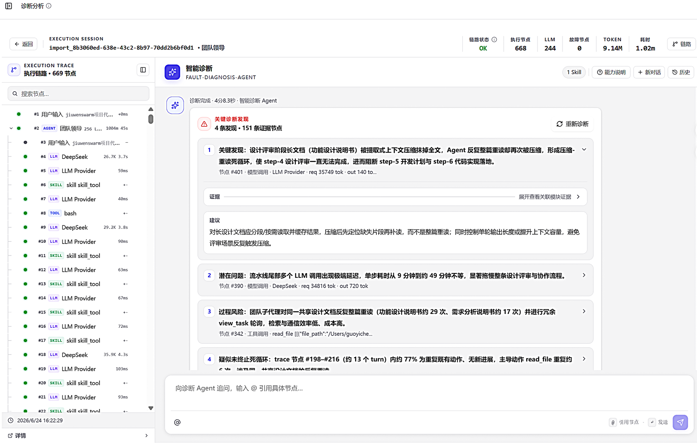
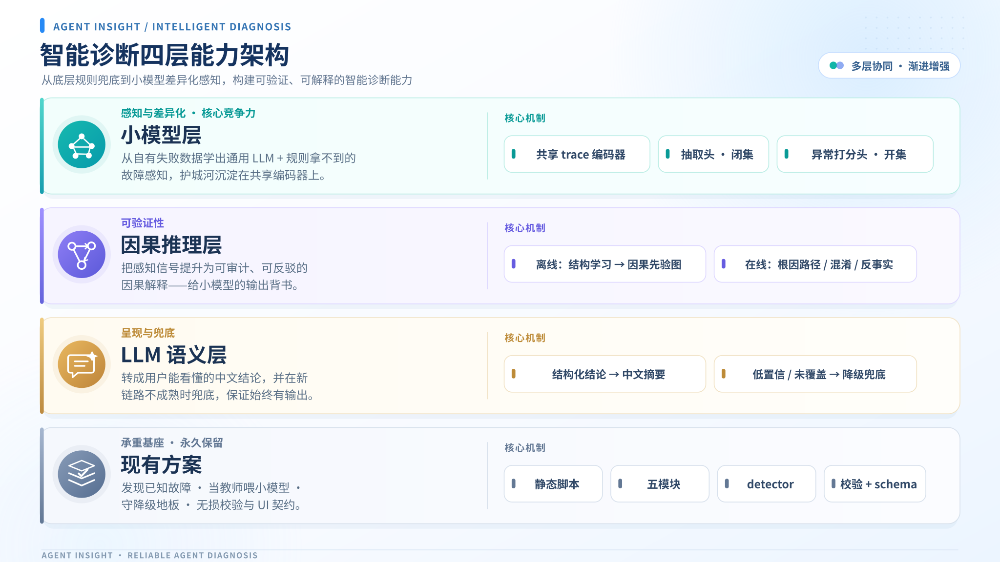
诊断流程 · 风险预检 → 五模块认知归因 → 根因聚合 → 诊断报告
问题驱动迭代，多级验证保障改进质量
把评测、诊断与反馈中的问题收敛为优化清单，在受约束的范围内改写 Skill，并以三级校验防止越改越差。
- 算子归并：分层语义去重，按频次分为核心整改、长尾归档与后续待办，收敛为可落地的优化清单
- 编辑范围约束：改前快照、误删自动还原、改动超限告警，锚点最小编辑，禁止全盘重写
- 自验证闭环：结构、真值、行为三级校验，任一失败自动回退重写
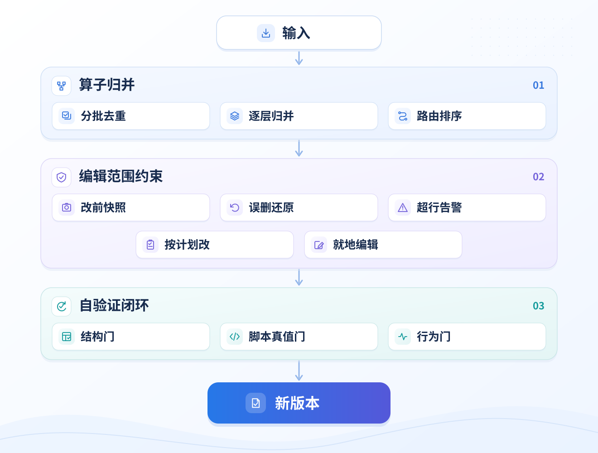
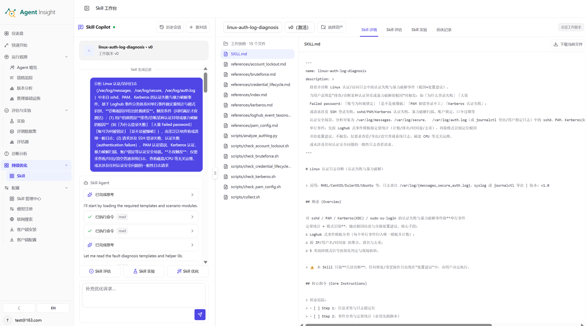
优化机制 · 算子归并、编辑范围约束与自验证闭环
平台、客户端、评测三类节点协同
客户端随 Agent 运行，负责采集与运行时防护；平台汇聚数据并下发任务；评测节点承载 Benchmark。
客户端节点
与 Agent 平台同机运行，提供可观测、RAS 与故障注入能力，可横向扩展到多台机器。
平台节点
Agent Insight 平台服务与 Web 门户，汇聚各节点数据，提供分析能力并统一调度任务。
评测节点
Agent Insight 评测服务与 Benchmark Harness，统一编排 Agent 与执行环境运行评测任务。
已支持对接 17 个主流 Agent 平台
每个平台按各自的原生机制接入，不改造 Agent 本体；平台清单随版本持续扩展。
平台清单
全部平台
没有匹配的平台，换个关键词试试。
三种采集方式
平台自带 OTEL 上报
平台原生输出 OTLP Traces / Logs，直接上报到 Agent Insight。
适用：Claude Code、OpenClaw、CodeAgent、LangGraph、LangChain、JiuwenSwarm 等
Agent Insight OTEL 采集
由 Agent Insight 采集组件为平台生成标准 OTEL 链路数据。
适用：Hermes、LlamaIndex、Qoder、PI Agent 等
Agent Insight 会话采集
增量读取会话文件，断点续跑，会话聚合去重后转换为链路。
适用：OpenCode、TRAE 等
服务端对上报数据统一做身份校验、解码归一化与持久化缓冲，再异步入库。
加入 Agent Insight 项目
Agent Insight 由 openEuler 社区 ANSE SIG 维护，代码托管在 AtomGit。ANSE SIG（AI-Native Software Engineering SIG）基于 AI 原生软件工程范式，为企业级软件交付提供可控、可靠、可演进的解决方案。